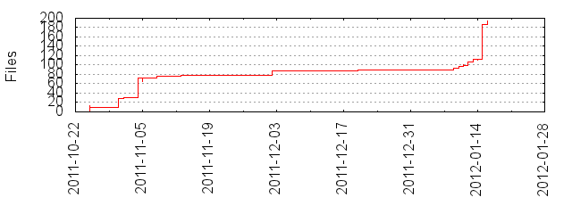

Files
- Total files
- 192
- Total lines
- 8974
- Average file size
- 121675.73 bytes

| Extension | Files (%) | Lines (%) | Lines/file |
|---|
| 6 (3.12%) | 9633 (107.34%) | 1605 |
| bz2 | 1 (0.52%) | 1856 (20.68%) | 1856 |
| cache | 1 (0.52%) | 3 (0.03%) | 3 |
| cmd | 2 (1.04%) | 6 (0.07%) | 3 |
| css | 1 (0.52%) | 145 (1.62%) | 145 |
| dat | 32 (16.67%) | 441 (4.91%) | 13 |
| exe | 1 (0.52%) | 4267 (47.55%) | 4267 |
| gif | 3 (1.56%) | 6 (0.07%) | 2 |
| gnuplot | 7 (3.65%) | 110 (1.23%) | 15 |
| html | 6 (3.12%) | 184 (2.05%) | 30 |
| ico | 1 (0.52%) | 40 (0.45%) | 40 |
| js | 1 (0.52%) | 324 (3.61%) | 324 |
| lp | 8 (4.17%) | 129 (1.44%) | 16 |
| pdf | 18 (9.38%) | 17895 (199.41%) | 994 |
| plot | 10 (5.21%) | 118 (1.31%) | 11 |
| png | 23 (11.98%) | 1844 (20.55%) | 80 |
| py | 34 (17.71%) | 3420 (38.11%) | 100 |
| qrc | 1 (0.52%) | 8 (0.09%) | 8 |
| sh | 6 (3.12%) | 11 (0.12%) | 1 |
| svg | 9 (4.69%) | 2820 (31.42%) | 313 |
| tex | 10 (5.21%) | 252 (2.81%) | 25 |
| txt | 7 (3.65%) | 59 (0.66%) | 8 |
| ui | 3 (1.56%) | 899 (10.02%) | 299 |
| zip | 1 (0.52%) | 43574 (485.56%) | 43574 |